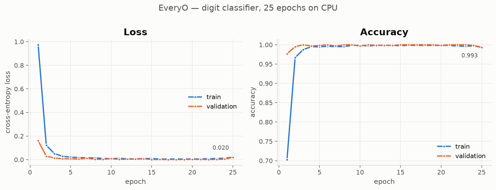
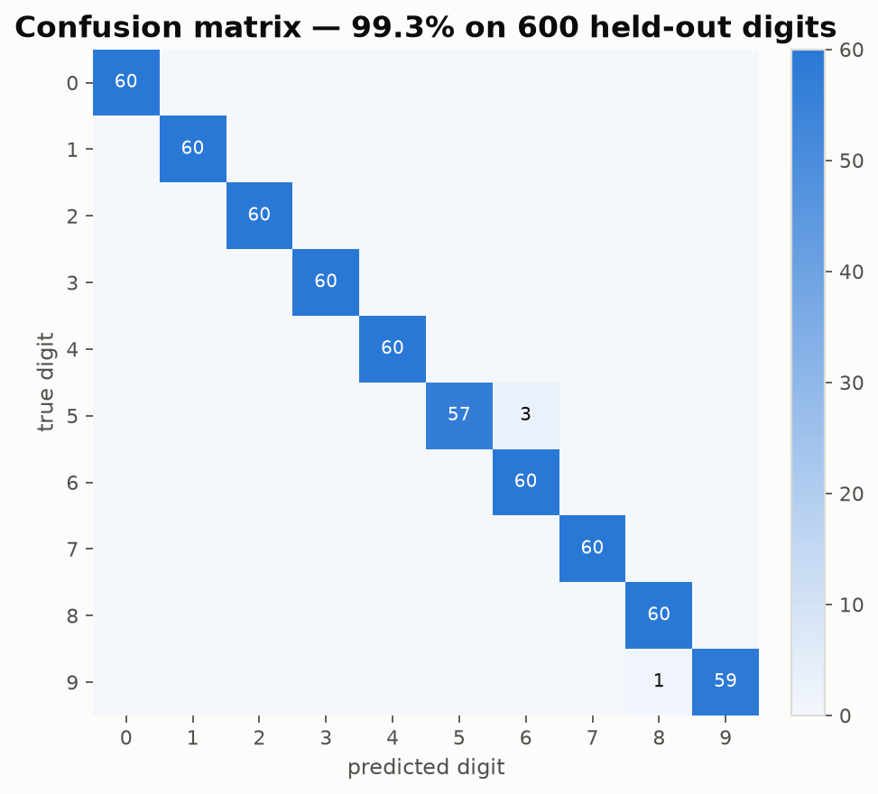
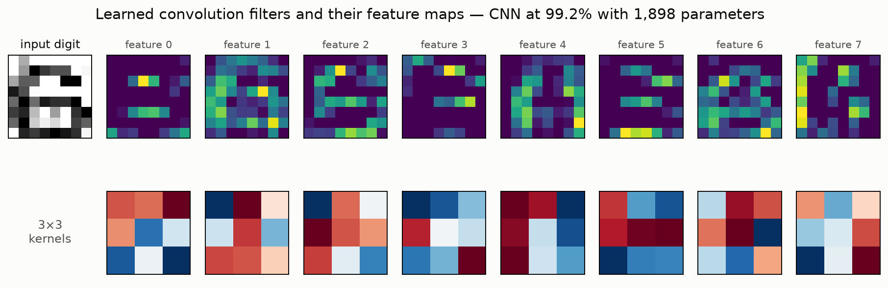
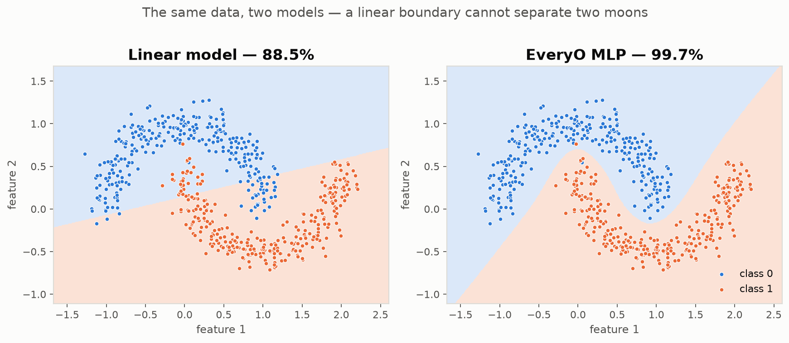
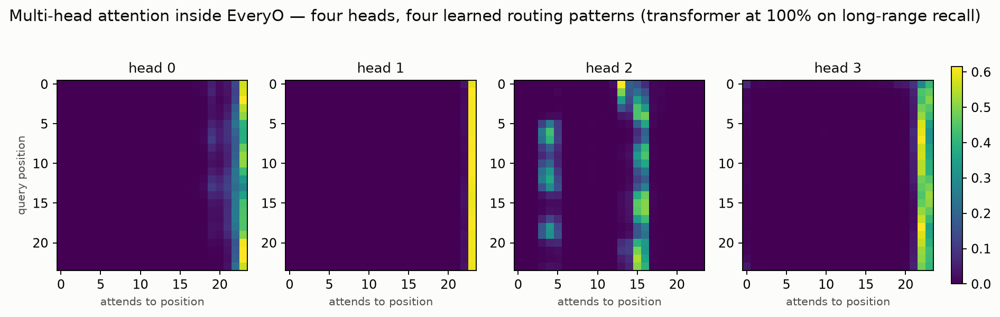
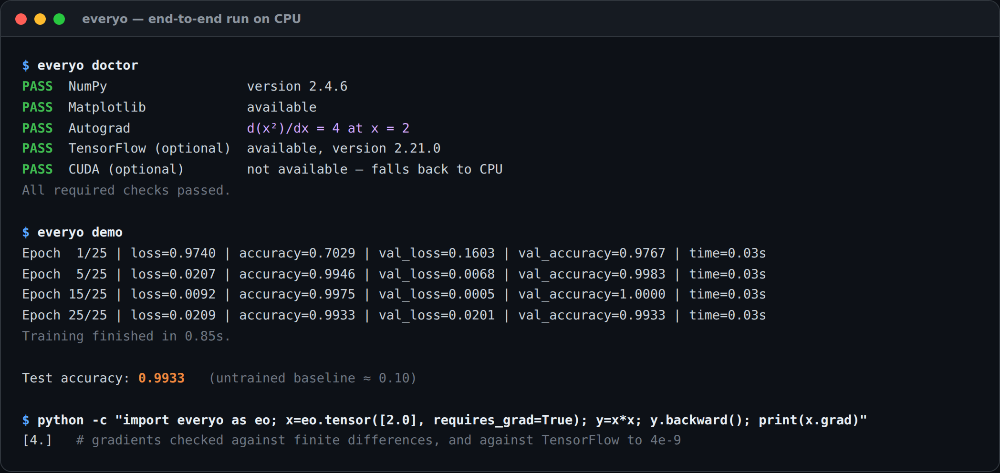

Legible by design
You can follow one number from loss.backward() through the graph walk,
into a matrix multiply, and out to a hand-written CUDA kernel — reading real
code the entire way.
EveryO implements tensors, reverse-mode automatic differentiation, layers, optimizers and the training loop from scratch in Python on NumPy. It is not a wrapper around PyTorch, TensorFlow or JAX, and it does not call out to one at runtime.
709 tests passing Python 3.9 – 3.12 · Linux, macOS, Windows
import everyo as eo
x = eo.tensor([2.0], requires_grad=True)
y = x * x
y.backward()
print(x.grad) # [4.]
# ^ a gradient engine you can read,
# not a binding to someone else'smodel.fit(). Every production framework starts a million lines below it.There is almost nothing in between that you can read. EveryO is that middle: small enough to follow end to end in an afternoon, and verified carefully enough to trust the numbers it produces.
You can follow one number from loss.backward() through the graph walk,
into a matrix multiply, and out to a hand-written CUDA kernel — reading real
code the entire way.
Every differentiable operation is checked against central finite differences, and the numerical results against TensorFlow. Where the two disagree, the project states by how much.
No accounts, no API keys, no credentials, no telemetry and no network calls from
the core. Model loading is pickle-free by design — an .evo
archive cannot execute code.
pip install -e . and everything runs, offline, on a laptop.EveryO is not a production training runtime. It will not out-perform a tuned framework on a large model, it has no GPU-resident tensors yet, and its distributed training runs on a single machine.
Everything in this table is implemented and covered by the test suite. Items that are experimental or planned are labelled as such rather than quietly listed alongside.
| Area | What it covers | Status |
|---|---|---|
| Tensors | dtypes, devices, broadcasting, indexing, reductions, NumPy interop | Available |
| Autograd | reverse-mode gradients for 25+ operations, iterative graph walk, no_grad | Available |
| Layers | Linear, Conv2D, MaxPool2D, AvgPool2D, Embedding, Flatten, Dropout, Sequential | Available |
| Normalization | BatchNorm1D, BatchNorm2D, LayerNorm — running statistics survive save/load | Available |
| Recurrent | RNN, LSTM (unit forget bias), GRU — BPTT on the same autograd engine | Available |
| Attention | MultiHeadAttention, PositionalEncoding, TransformerEncoder, causal and padding masks | Available |
| Losses | MSE, MAE, BCE, BCE-with-logits (numerically stable), cross-entropy | Available |
| Optimizers | SGD, momentum, Nesterov, weight decay, Adam, AMSGrad | Available |
| Training | validation, metrics, early stopping, checkpointing, LR scheduling, gradient clipping | Available |
| Mixed precision | autocast and GradScaler, fp32 master weights, dynamic loss scaling | Available |
| ONNX export | export_onnx — verified against ONNX Runtime, not only the schema checker | Available |
| Distributed | single-machine data parallelism with shared-memory gradient all-reduce | Available |
| Serialization | .evo archives that cannot execute code on load | Available |
| CUDA | 5 hand-written kernels with pybind11 bindings and automatic CPU fallback | Experimental |
| GPU-resident tensors | removing the per-call host–device copy | Planned |
| Multi-node training | today's implementation is one machine only | Planned |
Anyone can write something that looks like a framework. These are the numbers the test suite produces, on CPU, with no GPU and no credentials required.
gradients vs finite differences ..... every differentiable op, float64
matmul vs TensorFlow ............. 0.000e+00
conv2d vs TensorFlow ............. 0.000e+00 (valid/same, strided)
max/avg pool vs TensorFlow ............. 0.000e+00
relu vs TensorFlow ............. 0.000e+00
softmax vs TensorFlow ............. 2.980e-08
cross-entropy vs TensorFlow ............. exact to 6 decimals
its GRADIENT vs TensorFlow ............. 3.725e-09Every gradient is compared against a central finite-difference approximation in float64. A layer is not considered done because it trains — it is done when its derivative matches the numerical one.
Tensors use the NHWC layout TensorFlow uses, so convolution results
compare against tf.nn.conv2d directly — no transposing, no
wiggle room.
Every image below came out of an actual run in the repository, rendered with EveryO's own visualization module. Reproduce them with the bundled example scripts.

examples/neural_network.py.



TransformerEncoder, each having learned its own routing pattern.1.38e-11, LSTM
7.71e-06 — roughly 560,000× larger.
Three things a framework is supposed to grow into. All three are implemented, and all three are measured rather than claimed — including where they do not help.
autocast + GradScaler
matmul and conv2d run in float16; everything else stays in
float32 and the parameters never leave it. The backward pass genuinely runs in
float16, so gradients genuinely underflow — which is what loss scaling exists
to fix.
EveryO is NHWC; ONNX Conv is NCHW. Rather than
paper over that, every convolution is wrapped in a real pair of Transpose
nodes and "same" padding is written as explicit pads.
Processes, not threads, with a shared-memory gradient all-reduce. Averaging over disjoint shards is the same arithmetic as one large batch — so the result should match single-process training, and the example checks that.
OMP_NUM_THREADS=1 first: on the same 4-core
box, four workers took 1.8 s with it set and 11.0 s without — slower than not
parallelising at all.
One dependency for the core: NumPy. TensorFlow and CUDA are optional and the suite skips their tests cleanly when they are absent.
Clone and install in editable mode.
git clone https://github.com/krishanth7/EveryO.git
cd EveryO && pip install -e .everyo doctor reports what is present and what is optional.
everyo doctor
everyo demo # trains a digit classifier end to endThe API is deliberately familiar, so the interesting part is the source beneath it.
import everyo as eo
model = eo.Sequential(
eo.Conv2D(1, 8, 3, padding="same"),
eo.ReLU(),
eo.MaxPool2D(2),
eo.Flatten(),
eo.Linear(4 * 4 * 8, 10),
)
trainer = eo.Trainer(
model,
eo.Adam(model.parameters(), lr=0.005),
eo.CrossEntropyLoss(),
metrics=["accuracy"],
)
history = trainer.fit(train_loader, epochs=25)
# Export it for any other runtime
model.eval()
eo.export_onnx(model, "model.onnx",
input_shape=(1, 8, 8, 1))
everyo doctor and everyo demo, running end to end on a machine with no GPU.Contributions are welcome on any of the open items, and each one is self-contained.
Conv2D, MaxPool2D, AvgPool2DBatchNorm1D, BatchNorm2D, LayerNormRNN, LSTM, GRU, TransformerEncoderautocast, GradScalerexport_onnx, verified against ONNX RuntimeEveryO is independently maintained, and how it is run is written down rather than implied. If you are deciding whether to depend on it, contribute to it or teach with it, these documents say who decides what and what is expected of participants.
| Document | Read it when you want to know |
|---|---|
| Governance | Who maintains EveryO, how technical decisions are made, and who approves a release |
| Project policy | Terms for using, contributing to, forking and referring to the project |
| Repository rules | The standard an issue, discussion or pull request is held to |
| Code of Conduct | Expected behaviour, and how to report a problem |
| Contributing guide | Development setup, running the suite, and getting a change reviewed |
| Support | Where to ask a question, and what response to expect |
| Security policy | How to report a vulnerability privately, and the threat model |
| License | MIT — the legal terms the project policy supplements but never replaces |
The gradient engine is 251 lines. Start there, and follow a number until it stops surprising you.